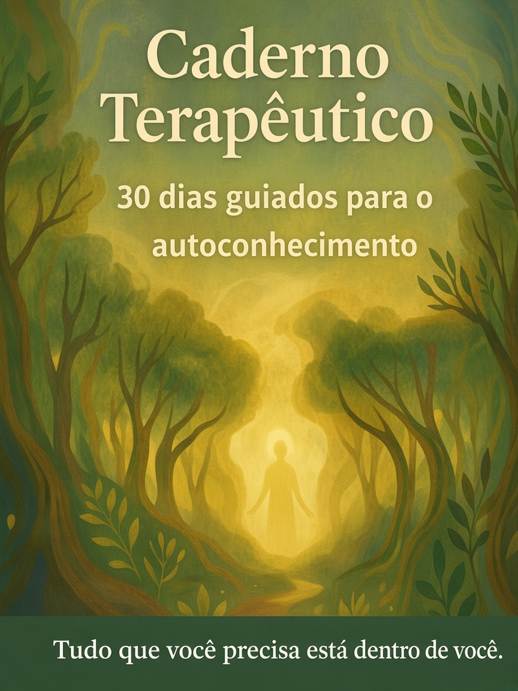
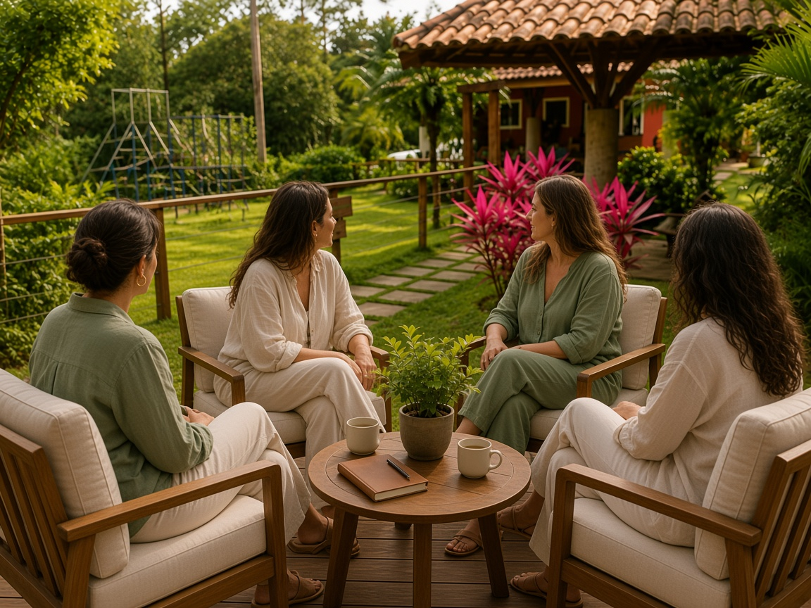
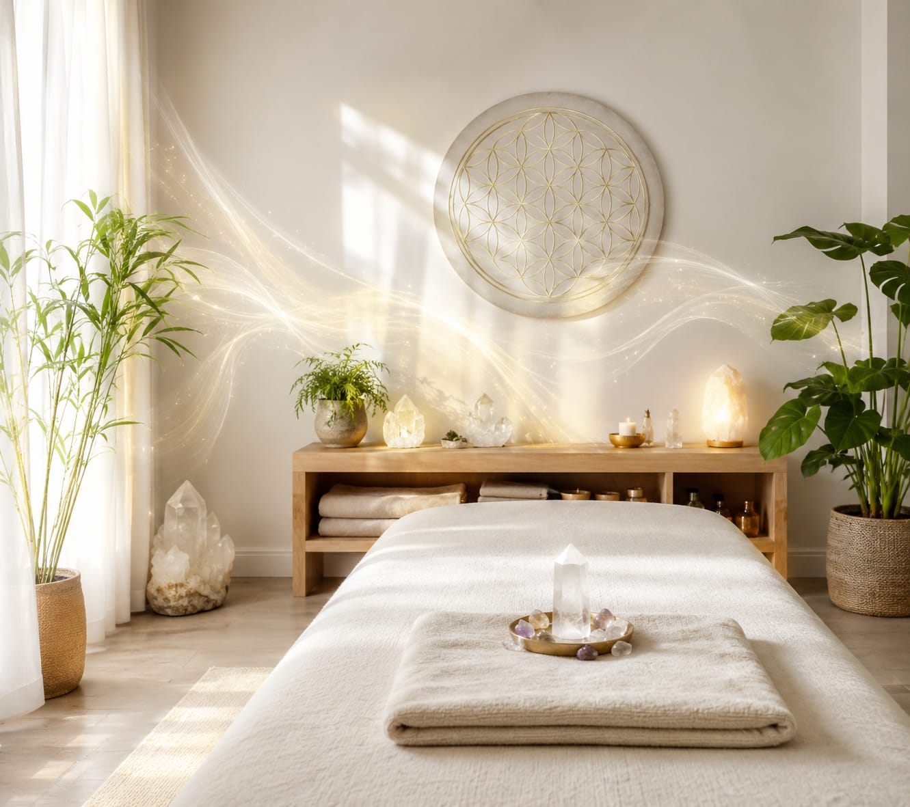

Corpo, mente e emoções
Terapias integrativas para acolher o que pulsa em você — sem pressa e sem fórmulas prontas.

Portal Lótus Terapias
Ieda Lima · Psicóloga & terapeuta
Cuide da sua saúde emocional e harmonize a vida profissional e pessoal. Terapias integrativas para acolher corpo, mente e emoções — com escuta, cuidado e presença.
A essência
Atendimentos personalizados para promover equilíbrio e bem-estar, no seu ritmo e na sua história.
Terapias integrativas para acolher o que pulsa em você — sem pressa e sem fórmulas prontas.
Cada encontro é construído a partir do seu momento, respeitando o que você precisa agora.
Práticas conduzidas com atenção verdadeira, para ressignificar padrões e abrir novas possibilidades de viver.
Caminhos
Escolha o formato que conversa com o seu momento: um caderno guiado, uma comunidade de mulheres ou um acompanhamento para empresas.

Produto
30 exercícios guiados de autoconhecimento. Um material digital para cuidar de si no seu tempo, no seu ritmo.

Comunidade
Grupo de apoio com áudios diários para sustentar presença, pertencimento e uma rotina de cuidado emocional.

Empresas
Saúde emocional no trabalho: equilíbrio, cultura de bem-estar e espaços que devolvem leveza à equipe.
Acolhimento contínuo
Além dos três caminhos principais, você pode agendar atendimentos pontuais ou um acompanhamento terapêutico personalizado.

Locais de trabalho e lares pesados afetam diretamente a produtividade e a saúde mental. Realizo a reorganização e limpeza energética de espaços corporativos e residenciais, eliminando a sobrecarga do ambiente para devolver a leveza e o bem-estar ao seu espaço de trabalho e ao seu lar.
Agendar no WhatsApp
Para profissionais que sofrem com insônia, ansiedade crônica, mente acelerada ou sintomas de burnout. Uma jornada online personalizada combinando escuta qualificada, técnicas de relaxamento guiado e suporte terapêutico, focada no alívio rápido do esgotamento emocional.
Agendar no WhatsAppConstruída a partir do seu momento e das suas necessidades. Cada encontro integra escuta, presença e diferentes recursos terapêuticos, respeitando seu ritmo e sua história. Um caminho de autoconhecimento para ampliar, ressignificar padrões e construir novas possibilidades de viver.
Agendar no WhatsAppComo funciona
Você escreve pelo WhatsApp. Escutamos o que está acontecendo e indicamos o caminho mais coerente: produto, clube, mentoria ou consulta.
Combinamos formato, ritmo e próximos passos — com clareza, sem pressão e no tempo que faz sentido para você ou para a sua empresa.
O acompanhamento acontece com presença: rituais, áudios, encontros ou harmonização, para integrar vida pessoal e profissional.
Vozes
“Voltei a dormir e a reconhecer o que é urgente de verdade. O protocolo me devolveu um chão.”
Ana C. · profissional de saúde
“O clube virou o meu ponto de apoio. Os áudios diários me sustentam nos dias mais cheios.”
Mariana L. · empreendedora
“A equipe chegou mais leve depois da harmonização. O ambiente parou de pesar na reunião.”
Ricardo P. · liderança comercial
Ieda Lima
O Portal Lótus Terapias é conduzido por Ieda Lima — psicóloga e terapeuta que acolhe corpo, mente e emoções com escuta, cuidado e presença.
O trabalho nasce da convicção de que bem-estar não é um luxo paralelo à rotina: é o que permite ocupar cada papel social com mais clareza, afeto e equilíbrio.
Conhecer IedaDúvidas
Se a sua pergunta não estiver aqui, fale conosco no WhatsApp. O primeiro passo é uma conversa.
Convite
Cuide da sua saúde emocional e harmonize vida profissional e pessoal. Estamos a uma mensagem de distância.